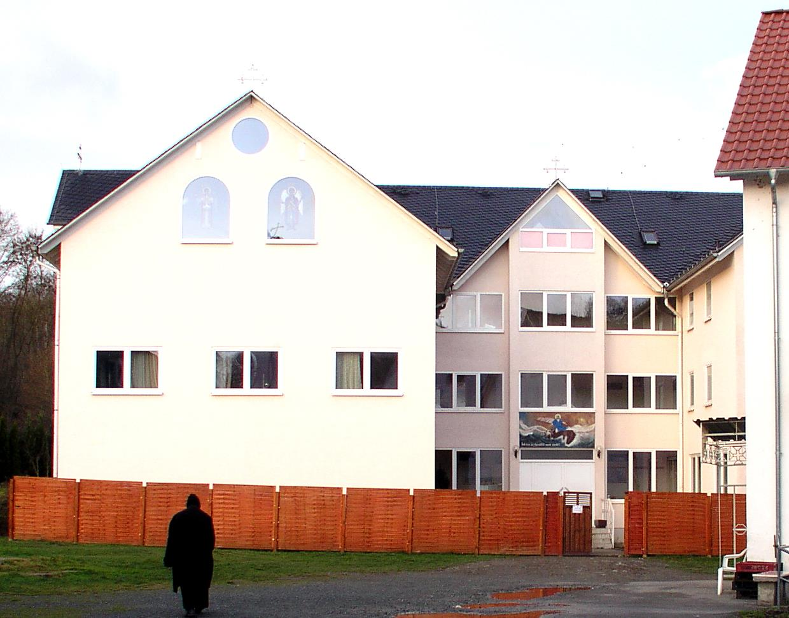
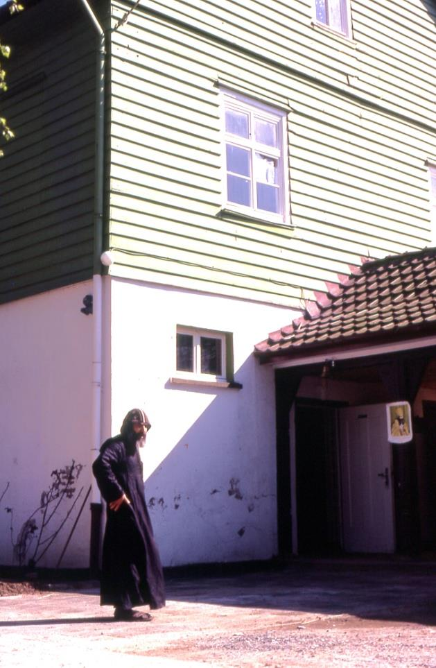

83 عام فى 1980 أوصى قداس ة الثالث شنوده األنبا البابا هللا أطال ، األنبا دير بتأسس سولاير صليب القمص المتنيح ،حياته كريفيلباخ فى أنطونيوس .بألمانيا أرسل البداية وفى قداس ة البابا .البراموس دير رهبان من ورعين راهبين الدير إلي وتفضل منذ إنطونيوس األنبا كنيسة بتدشين قداسته 20 عام ،سنة 1990 . هللا وبمعونة تم الدي بناء تكملة ر الى مساحته وتوسيع 9 أفدنة طوال 30 .اليوم إلى عاما الرهبان لآلباء وأصبح (عددهم الرهبنة طالبى واإلخوة 6 بهم خاص جديد مبنى )اليوم ( أنظرتحت ال (على القديم المبنى من بدال ) يمين .) 1980 (rechtes Bild): S.H. Papst Shenouda III beauftragt den Erzpriester Salib Sourial (†) mit der Gründung des St. Antonius Klosters in Kröffelbach/ Taunus. Er entsendet gleichzeitig zwei asketische Mönche aus dem Baramoskloster. 30 Jahren später (unteres Bild): Mit Gottes Hilfe wurde das Kloster wesentlich erweitert. Den Mönchen und den 6 Novizen steht heute ein neues Gebäude mit einer Bibliothek zur Verfügung. 1980 2010
St. Markus · 2010 · Deutsch
ثالثون عاما منذ تأسيس دير القديس العظيم األنبا أنطونيوس بكريفلباخ-
Ausgabe 1 · Seite 83

